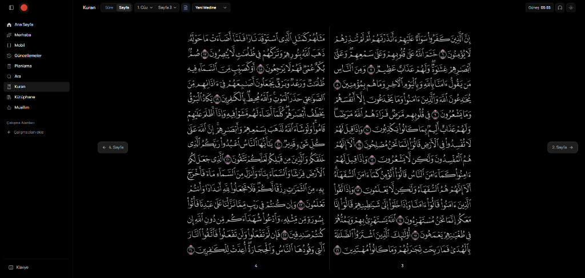
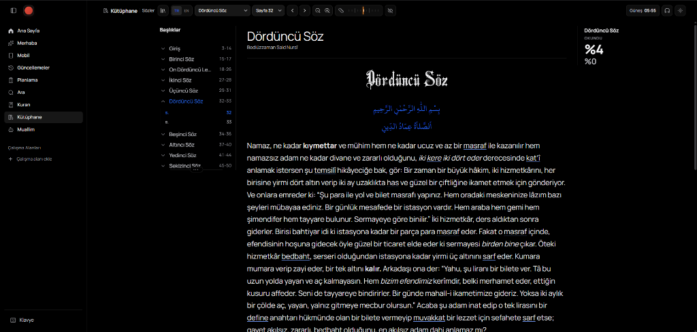
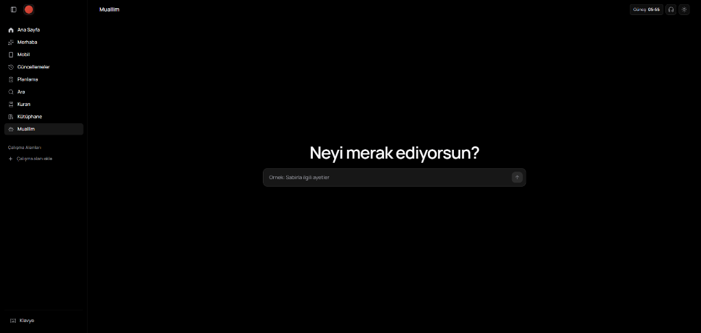
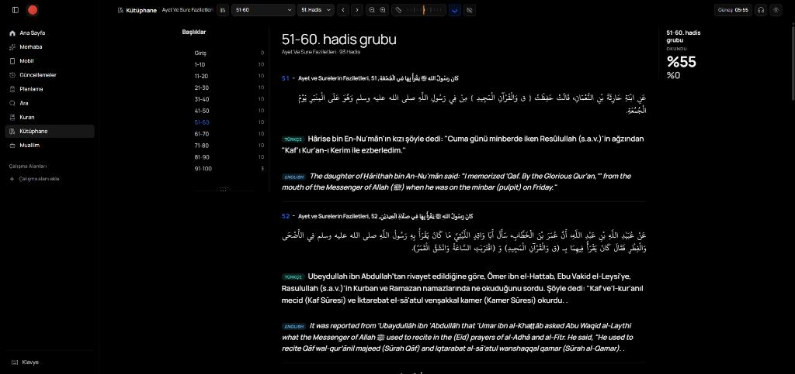
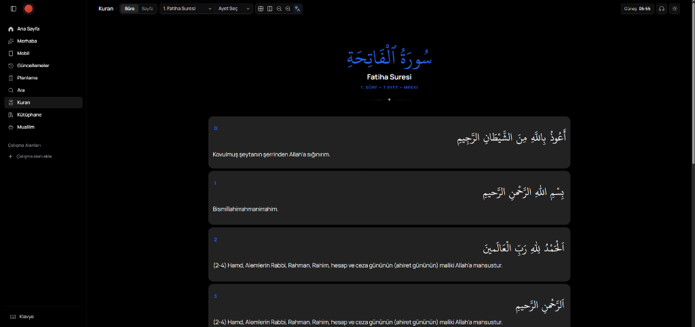
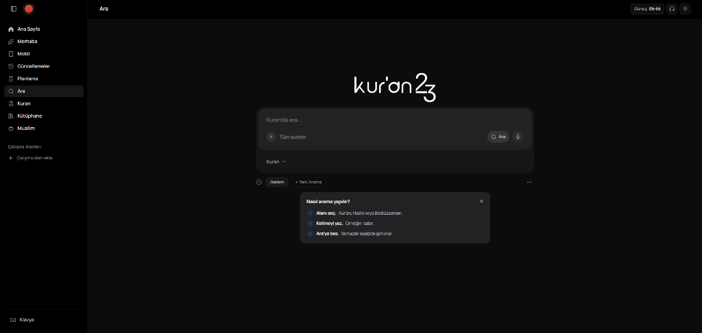

Kuran23
Kuran23, Kur'an'ı farklı mealler, tefsirler, hadis kaynakları ve Muallim yapay zekâ rehberi ile birlikte inceleyebileceğiniz modern bir araştırma ve çalışma platformudur.

Kuran23, Kur'an üzerine okumayı, araştırmayı ve düşünmeyi yeniden tasarlayan modern bir çalışma platformudur.
Kur'an üzerine dijital içerik sunan sistemlerin büyük çoğunluğu yalnızca okuma deneyimine odaklanıyor. Bir ayeti farklı meallerle karşılaştırmak, güvenilir tefsirlere ulaşmak, hadislerle ilişkilendirmek, not almak ve araştırma yapmak ise çoğu zaman farklı uygulamalar veya web siteleri arasında geçiş yapmayı gerektiriyor.
Kuran23, bu dağınık deneyimi tek bir platform altında birleştirmek amacıyla geliştirildi. Kullanıcılar yalnızca bir meal okumak yerine farklı çevirileri karşılaştırabilir, klasik tefsirlere ulaşabilir, hadis kaynaklarını inceleyebilir, kendi çalışma alanlarını oluşturabilir ve Muallim ile ayetler üzerine düşünmeye yardımcı olacak sohbetler gerçekleştirebilir.
Uzun vadeli hedefimiz sıradan bir içerik sunucusu geliştirmek değil; Kuran23, Kur'an üzerine okumayı, araştırmayı, düşünmeyi ve öğrenmeyi dijital çağ için yeniden tasarlayan modern bir çalışma platformudur.

Çoklu Kaynak Deneyimi
Bir ayeti 20+ Türkçe ve İngilizce meal, 15+ klasik tefsir ve 60.000+ hadis kaynağıyla tek ekranda inceleme imkânı.

Muallim AI & Tefekkür Sohbetleri
Kur'an üzerine düşünmeye yardımcı olmak amacıyla geliştirilen "Neyi merak ediyorsun?" odağındaki akıllı yapay zekâ rehberi ve RAG mimarisi.
Cloudflare Edge Mimarisi
Next.js, TypeScript, React ve Edge Functions tabanlı geliştirme ile düşük gecikmeli ve yüksek performanslı küresel erişim sağlandı.
Semantik İçerik Keşfi
Sadece anahtar kelime eşleşmesi yerine, mealler, tefsirler, hadisler ve kitaplar arasında anlam odaklı içerik keşfi sunan akıllı arama.
RAG & Muallim AI Rehberi
Kur'an odaklı Retrieval-Augmented Generation (RAG) mimarisiyle ayetler üzerine düşünmeye yardımcı olan Muallim yapay zekâ rehberi.
Daha Fazla Özellik ≠ Daha İyi Deneyim
Kullanıcılar karmaşık menülerden çok sade ve hızlı deneyimleri tercih ediyor. Milisaniyeler seviyesindeki hız doğrudan güven oluşturuyor.
Karşılaştırmalı Okuma Gücü
Tek bir meal yerine farklı çevirileri yan yana görmek öğrenme sürecini güçlendiriyor; notlar ve koleksiyonlar bağlılığı artırıyor.
Muallim Bir Rehberdir
Muallim'in amacı direkt cevap vermekten çok; kullanıcının kendi araştırmasını, tefekkürünü ve sorgulamasını kolaylaştırmaktır.


